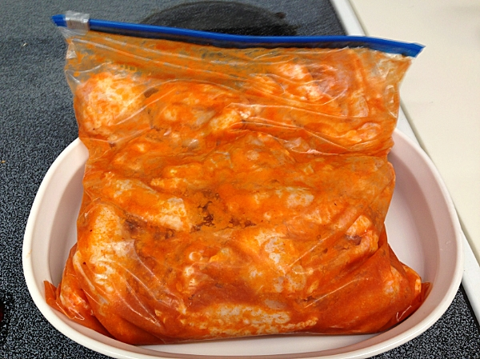
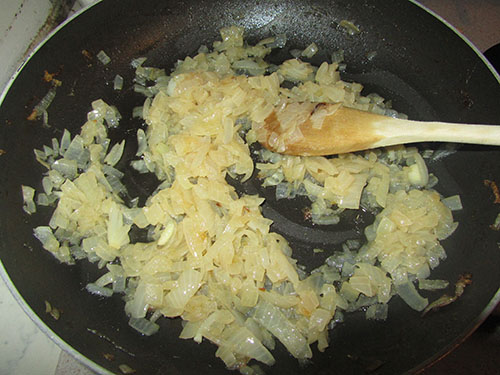

Butter chicken isn't the spiciest of Indian dishes, but it's always a crowd pleaser. With this recipe I stole from foodess.com, you can create a delicious Delhi experience for your family and friends in your very own home.
Bacon ipsum dolor amet in pork chop turkey shoulder. Turducken quis capicola id pastrami salami. Dolore andouille elit fatback. Pork chop landjaeger capicola, commodo venison et do in tenderloin alcatra boudin meatloaf pig duis. Alcatra consectetur minim, andouille commodo velit ut drumstick exercitation jerky pancetta.
Porchetta deserunt frankfurter kielbasa magna commodo adipisicing ad enim aute. Do adipisicing tempor boudin venison sirloin. Leberkas nulla aliqua, biltong id pork loin shoulder pork belly porchetta bacon flank ut shank ground round irure. Minim sausage ham non, doner filet mignon pancetta jowl labore in. Landjaeger brisket shankle cupim pig jowl. Excepteur frankfurter aliqua, ex culpa cupim do.
Butter Chicken
Ingredients
- For chicken and marinade:
- 2.2 lbs (1 kg) boneless, skinless chicken breast cut in 1" - 2" cubes
- 2 tbsp lemon juice
- 2 cloves garlic, minced
- 1 tbsp garam masala
- 1 tsp kosher salt
- For sauce:
- 1/4 cup vegetable oil
- 2 1/2 cups chopped onion (about 2 medium-large)
- 2 tbsp coarsely chopped garlic
- 2 tbsp garam masala
- 2 tsp paprika
- 1/4 tsp cinnamon
- 2 tsp kosher salt, or to taste
- 2 cups diced no-salt-added canned tomatoes
- 3/4 cup cream
- 2 tbsp butter
- Chopped cilantro, to garnish (optional)
Directions
- 
Combine all ingredients in a zip-top bag or shallow baking dish, massaging the marinade into the chicken. Let stand at room temperature while you prepare the sauce, or marinate in the fridge overnight.
- 
Heat oil over medium heat in a large saucepan or dutch oven. Add onions and slowly cook until golden, about 20 minutes, reducing heat if they are getting crispy or browning quickly.
Add garlic and cook until fragrant, about 1 minute.
Stir in garam masala, paprika, cinnamon and salt; cook 1 minute more.
Add tomatoes; cook 2 minutes.
Add cream and carefully puree using an immersion blender (or standing blender, but do it in batches or the steam will blow the top off).
Return sauce to saucepan and bring to a simmer.
Add chicken to the sauce, cover, and simmer over medium-low heat until cooked through, about 12 minutes (remove a couple of pieces to make sure they are no longer pink inside). A gentle simmer is required to gently cook the breasts so they don't become tough, and you don't want to overcook them.
Stir in butter, taste and add more salt to taste. Serve sprinkled with cilantro, if desired.